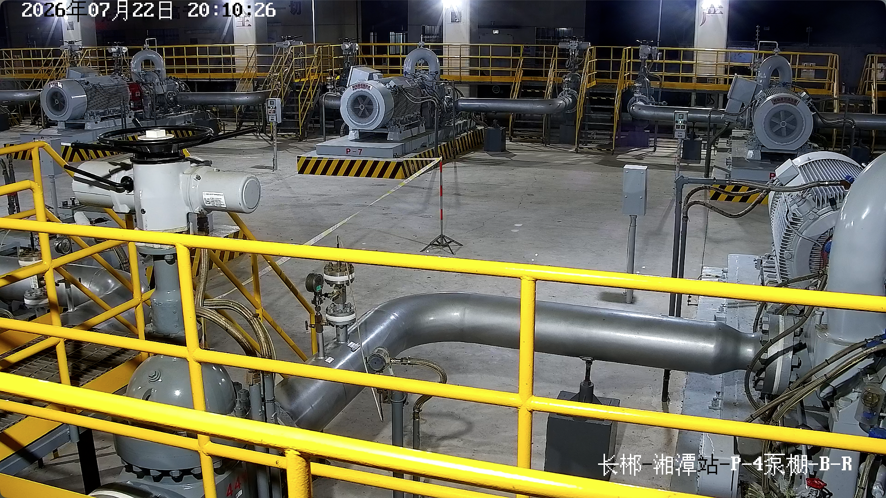

过滤分离器差压应小于 0.1MPa
当前巡检表单第 73 项填写为正常，但系统发现 72h 差压趋势末值达到 0.097MPa，距离红线 0.003MPa。
命中规则后，系统不直接判定异常，而是生成可执行的复检动作：
- 复核现场差压表与趋势数据是否一致。
- 补拍过滤器铭牌、差压表和设备周边状态。
- 由人工选择确认异常、误报关闭或继续观察。
- 根据人工结论生成交接班关注和报告归档。
先看巡检任务在哪里、风险点在哪里。首页只负责把评委带入场景。
这个页面只回答一个问题：为什么“表单正常”仍然需要复检。
这个页面只处理现场画面。趋势结论不在这里重复展开。

这个页面像规则库检索，不再把依据藏在问答抽屉里。
当前巡检表单第 73 项填写为正常，但系统发现 72h 差压趋势末值达到 0.097MPa，距离红线 0.003MPa。
命中规则后，系统不直接判定异常，而是生成可执行的复检动作：
这个页面只做人工确认，系统负责把证据转成动作。
AI 已完成证据汇总和复检清单生成。请人工选择结论，报告页将根据结论生成不同内容。
这个页面只展示闭环结果：报告、交接班、案例沉淀。
任务批次：XJ-20260721-A / 对象：计量区过滤器差压 / 生成状态：报告草稿
报告尚未形成最终结论。请先在复检工作台选择人工结论。